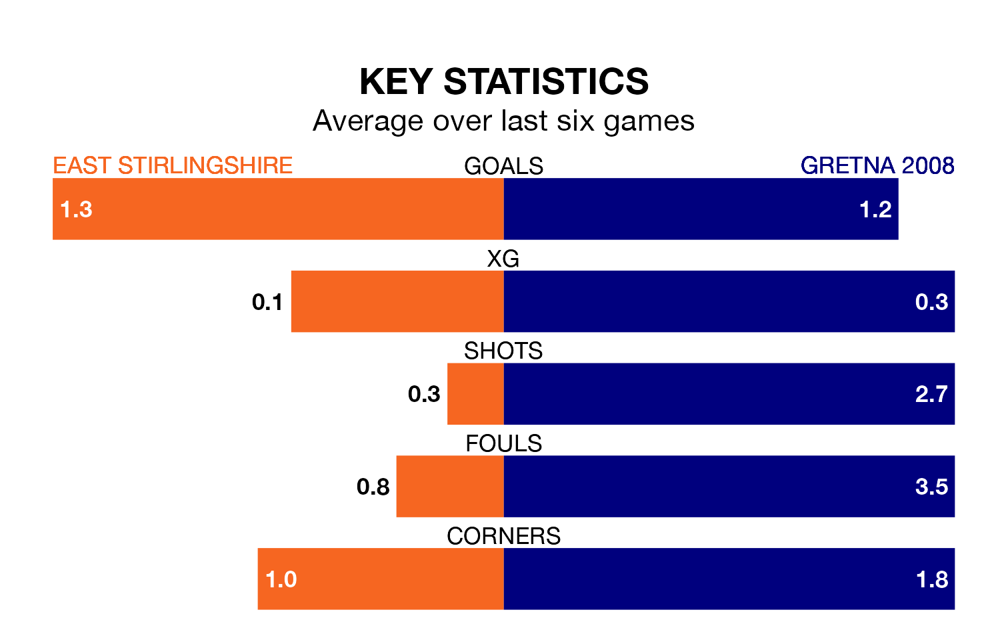

Saturday's match at the Falkirk Community Stadium sees two relegation candidates play each other, as 16th-ranked East Stirlingshire host 17th-placed Gretna 2008.
East Stirlingshire have picked up 17 points from their first 17 Lowland Football League games, with four wins and five draws.
That is 10 points more than Gretna 2008 have collected, having won one and drawn four.
East Stirlingshire are in bad form in Lowland Football League, with one win and a draw from their last six games.
But with no wins and three draws over that period, Gretna 2008's form is even worse – they have taken three points from 18, compared to the Shire's four.
In the last 10 years, East Stirlingshire and Gretna 2008 have played each other on 10 occasions. East Stirlingshire won seven of them, Gretna 2008 two, and they drew once.
On average, the Shire scored 3.4 goals and Gretna 2008 1.0 in those matches.
Their last meeting was on August 19, when East Stirlingshire won 4-1 away.
With 16 goals in 24 games so far this season, the visitors are the league's second-lowest scorers with 0.7 goals per game. And they are conceding more than average, letting in 85 goals at a rate of 3.5 per game.
The home team are also below average scorers, with 1.4 goals per game, compared to a league average of 1.7. They have conceded 2.0 goals per game.
East Stirlingshire's last match was on January 13, a 1-1 draw against Linlithgow Rose.
Gretna 2008 lost 4-1 against BSC Glasgow last time out, also on January 13.
Updated: 08:51 (UTC), 25/01/24